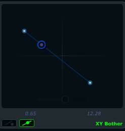

Introduction
Cabbage is a software for prototyping and developing audio plugins with the Csound audio synthesis language. It provides users with a powerful toolkit for the development of cross-platform audio software. This document will take you through the basics of using Cabbage. It starts with a look at features provided by the run-time player, or standalone host, and then moves on to some simple examples. The text concludes with a reference section for the various GUI controls available in Cabbage. It’s assumed that the reader has some prior knowledge of Csound.
In order to use Cabbage you MUST have Csound installed.
The Cabbage standalone player

Most prototyping will be done in the Cabbage standalone host. This host lets you load and perform Cabbage instruments, as seen in the screenshot above. Clicking on the options button will give you access to the following commands:
Open Cabbage Instrument
Use this command to open a cabbage instrument(unified Csound file with a dedicated <Cabbage></Cabbage> section). You may open any .csd file you wish and add a Cabbage section yourself once it’s open. If opening an existing Csound instrument you may need to turn off Cabbage audio IO in the preferences, otherwise you may have a situation where both Csound and Cabbage are trying to access the computers audio drivers.

|
On OSX users can open .csd files contained within plugins. Just select a .vst file instead of a .csd file when opening. See the sections on exporting plugins for more information. |
New Cabbage…
This command will help you create a new Cabbage instrument/effect. Cabbage instruments are synthesisers capable of creating sounds from scratch while effects process incoming audio. Effects can access the incoming audio by using the inch or ins opcodes. All effects have stereo inputs and stereo outputs. Instruments can access the incoming MIDI data in a host of different ways but the easiest is to pipe the MIDI data directly to instrument p-fields using the MIDI inter-op command line flags. Examples can be found in the examples folder.
The ctrl7 opcode doesn’t currently work in Cabbage due to some issues with CC messages in the incoming MIDI stream. You can however use ctrl7 in standalone mode if you disable Cabbage IO and use Csound IO instead.
View Source Editor
This command will launch the integrated text editor. The text editor will always contain the text which corresponds to the instrument that is currently open. Each time a file is saved in the editor(Ctrl+S), Cabbage will automatically recompile the underlying Csound instrument and update any changes that have been made to the instruments GUI. The editor also features a Csound message console that can prove useful when debugging instruments.
Audio Settings
Clicking on the audio settings command will open the audio settings window. Here you can choose your audio/MIDI input/output devices. You can also select the sampling rate and audio buffer sizes. Small buffer sizes will reduce latency but might cause some clicks in the audio. A buffer size of 64 seems to work very well on Linux systems, but keep testing sizes until you find a setting that works best for your PC.
|
|
If Cabbage is using its own audio IO, which it does be default, be sure to use -n in the <CsOptions> sections of your Csound file. This tells Csound not to open any audio devices. |
Toggle edit-mode
This is a new and somewhat experimental feature that allows you to design GUIs using the mouse. When in edit-mode, right clicking the instrument GUI will display a context menu that will let you select controls to insert into the GUI. When a control is placed into your GUI the corresponding code will be inserted into your csd file. Any changes you make to the control’s size and position will automatically be updated in your code.
Export/Export as…
This command will export your Cabbage instrument as a plugin. Clicking synth or effect will cause Cabbage to create a plugin file in the same directory as the .csd file you are currently using. When exporting as… Cabbage will prompt you to save your plugin in a set location, under a specific name. Once Cabbage has created the plugin it will make a copy of the current .csd file and locate it in the same folder as the plugin. This new .csd file will have the same name as the plugin and should ALWAYS be in the same directory as the plugin file.
|
|
You do not need to keep exporting instruments as plugins every time you modify them. You need only modify the associated .csd file. To simplify this task, Cabbage will automatically load the associated .csd file whenever you export as a plugin. On OSX you Cabbage can open a plugin’s .csd file directly be selecting the plugin when prompted to select a file to open. |
Rebuild Instrument
This command will reset and rebuild the instrument. All sounds will be lost as Csound will be told to recompile the .csd file. This is what happens each time you hit Ctrl+s from the code editor.
Rebuild GUI
This command will update the instrument’s GUI, but will not recompile Csound. This command is called each time you press Ctrl+u from the code editor.
Batch Convert
This command will let you convert a selection of Cabbage .csd files into plugins so you don’t have to manually open and export each one.
|
|
Currently this feature is only available on Windows. |
Preferences
The following preferences are available:
Always on Top
This command lets you toggle Always on top mode. By default it is turned on. This means your Cabbage instrument will always appear on top of any other applications that are currently open.
Set Cabbage plant directory
This will open a directory browser dialog so that you can specify a set directory for saving Cabbage plant text files to. The default location for these files will be the user’s home folder and should be left as is unless a unique location is absolutely required.
Set Csound manual directory
This will open a directory browser dialog so that you can specify the directory that contains Csound’s index.html file.
|
|
In-line help is only available on Windows and OSX. |
Disable plugin export info
Checking this will disable the plugin export information that pops up on screen each time you export a plugin.
Auto update
Checking this will cause Cabbage to continuously check whether changes have been made to the file it has open. If you wish to use a different source code editor with Cabbage than the one provided, you can check this option. Whenever you save changes to the .csd file that Cabbage currently has open, Cabbage will automatically update according to the changes made. Although it’s not as quick as the integrated editor, it does give you scope to use some feature rich source code editors with Cabbage.
Disable GUI edit-mode warning
Checking this will disable the GUI edit-mode warning.
Use Cabbage IO
This will turn on or off Cabbage audio and MIDI input/output and is only applicable to standalone instruments. When Cabbage IO is turned off Cabbage will let Csound take control of the audio and MIDI IO. This means that users will need to use standard Csound IO flags in the <CsOptions> section of their .csd file.
Your first Cabbage instruments
The following section illustrates the steps involved in building a simple Cabbage instrument. It’s assumed that the user has some prior knowledge of Csound. For a list of Csound tutorials and resources please visit the Csound Homepage. Each Cabbage instrument is defined in a simple Csound text file. The syntax used to create GUI controls is quite straightforward and should be provided within special xml-style tags <Cabbage> and </Cabbage> which can appear either above or below Csound’s own <CsoundSynthesizer> tags. Each line of Cabbage specific code relates to one GUI control only. The attributes of each control are set using different identifiers such as colour(), channel(), size() etc. Where identifiers are not used, Cabbage will use the default values. Long lines can be broken up with a \ placed at the end of a line.
Each and every Cabbage widget has 4 common parameters: position on screen(x, y) and size(width, height). Apart from position and size all other parameters are optional and if left out default values will be assigned. To set control parameters you will need to use an appropriate identifier after the control name. In the following example, form is the Cabbage specific control, while size() and caption() are two identifiers used to control it how it appears.
control size(400, 400), caption(“Hello World”)|
|
This section does not go into details about each Cabbage control, nor does it show all available identifiers. Details about the various Cabbage controls can be found in reference section below. |
A basic Cabbage synthesiser
Code to create the most basic of Cabbage synthesisers is presented below. This instrument uses the MIDI interop command line flags to pipe MIDI data directly to p-fields in instrument 1. In this case all MIDI pitch data is sent directly to p4, and all MIDI amplitude data is sent to p5. MIDI data being sent on channel 1 will cause instrument 1 to play. Data being sent on channel 2 will cause instrument 2 to play. If you wish to assign an instrument to a unique MIDI channel you can use the massign opcode.
<Cabbage>
form size(400, 120), caption("Simple Synth"), pluginID("plu1")
keyboard bounds(0, 0, 380, 100)
</Cabbage>
<CsoundSynthesizer>
<CsOptions>
-n -d -+rtmidi=NULL -M0 --midi-key-cps=4 --midi-velocity-amp=5
</CsOptions>
<CsInstruments>
sr = 44100
ksmps = 64
nchnls = 2
0dbfs=1
instr 1
kenv linenr p5, 0.1, .25, 0.01
a1 oscil kenv*k1, p4, 1
outs a1, a1
endin
</CsInstruments>
<CsScore>
f1 0 1024 10 1
f0 3600
</CsScore>
</CsoundSynthesizer>|
|
You’ll notice that a -n and -d are passed to Csound in the CsOptions section. -n stops Csound from writing audio to disk. This must be used when building plugin as Cabbage manages its own audio IO callbacks in plugin mode. The -d prevents any FLTK widgets from displaying. You will also notice that our instrument is stereo. All Cabbage instruments are stereo. |
Controlling your Cabbage patch
The most obvious limitation to the above instrument is that users cannot interact with the underlying Csound instrument. In order to do this we can use a Csound channel opcode and a Cabbage control such as a slider. Any control wishing to interact with Csound must have a channel identifier.
When one supplies a channel name to the channel() identifier Csound will listen for data being sent on that channel through the use of the named channel opcodes. There are a few ways of retrieving data from the named channel bus in Csound, the most straightforward one being the chnget opcode. It’s defined in the Csound reference manual as:
kval chnget SnameSname is the name of the channel. This same name must be passed to the channel() identifier in the corresponding <Cabbage> section. Our previous example can be modified so that a slider now controls the volume of our oscillator.
<Cabbage>
form size(400, 170), caption("Simple Synth"), pluginID("plu1")
hslider bounds(0, 110, 380, 50), channel("gain"), range(0, 1, .5), textBox(1)
keyboard bounds(0, 0, 380, 100)
</Cabbage>
<CsoundSynthesizer>
<CsOptions>
-n -d -+rtmidi=NULL -M0 --midi-key-cps=4 --midi-velocity-amp=5
</CsOptions>
<CsInstruments>
sr = 44100
ksmps = 64
nchnls = 2
0dbfs=1
instr 1
k1 chnget "gain"
kenv linenr p5, 0.1, 1, 0.1
a1 oscil kenv*k1, p4, 1
outs a1, a1
endin
</CsInstruments>
<CsScore>
f1 0 1024 10 1
f0 3600
</CsScore>
</CsoundSynthesizer>In the example above we use a hslider control which is a horizontal slider. The bounds() identifier sets up the position and size of the widget on screen. The most important identifier is channel(). It is passed a string called gain". This is the same string we pass to 'chnget in our Csound code. When a user moves the slider, the current position of the slider is sent to Csound on a channel named "gain". Without the channel() identifier no communication would take place between the Cabbage control and Csound. The above example also uses a MIDI keyboard that can be used en lieu of a real MIDI keyboard.

A basic Cabbage effect
Cabbage effects are used to process incoming audio. To do this we make use of the signal input opcodes. One can use either ins or inch. The following code is for a simple reverb unit. It accepts a stereo input and outputs a stereo signal.
<Cabbage>
form caption("Reverb") size(230, 130)
groupbox text("Stereo Reverb"), bounds(0, 0, 200, 100)
rslider channel("size"), bounds(10, 25, 70, 70), text("Size"), range(0, 2, 0.2)
rslider channel("fco"), bounds(70, 25, 70, 70), text("Cut-off"), range(0, 22000, 10000)
rslider channel("gain"), bounds(130, 25, 70, 70), text("Gain"), range(0, 1, 0.5)
</Cabbage>
<CsoundSynthesizer>
<CsOptions>
-d -n
</CsOptions>
<CsInstruments>
; Initialize the global variables.
sr = 44100
ksmps = 32
nchnls = 2
instr 1
kfdback chnget "size"
kfco chnget "fco"
kgain chnget "gain"
ain inch 1
aoutL, aoutR reverbsc ain, ain, kfdback, kfco
outs aoutL*kgain, aoutR*kgain
endin
</CsInstruments>
<CsScore>
f1 0 4096 10 1
i1 0 1000
</CsScore>
</CsoundSynthesizer>The above instrument uses 3 sliders to control the reverb size, the cut-off frequency (for the internal low-pass filters set up on the different delay lines), and overall gain. The range() identifier is used with each slider to specify the min, max and starting value of the sliders.

|
|
If you compare the two score sections in the above instruments you’ll notice that the synth instrument doesn’t use any i-statement. Instead it uses an f0 3600. This tells Csound to wait for 3600 seconds before exiting. Because the instrument is to be controlled via MIDI we don’t need to use an i-statement in the score. In the other example we use an i-statement with a long duration so that the effect runs without stopping for a long time. |
Exporting your instruments as plugins
Once you have created your instruments you will need to export them as plugins if you want them to be seen by other hosts. When you export an instrument through Cabbage it will create a plugin file that will have the same name as the .csd file you are currently working on. In your plugin host you will need to add the directory that contains your Cabbage plugins and csd files.
|
|
In order to make future changes to the instrument you only need to edit the associated .csd file. For instance, on windows you might have a plugin called "SavageCabbage.dll". If you wish to make some chages you only have to edit the corresponding "SavageCabbage.csd" file. In order to see the changes in your plugin host you will need to delete and reinstate the plugin from the track. Once you remove and add the plugin it will show the new changes. |
Distributing standalone software
For Cabbage plugins and instruments to work on other machines the host PC will have to have Csound installed. If Csound is not there then Cabbage will not be able to run its instrument due to the absence of the Csound library. Must users developing instruments will most likely to have Csound installed. But your target audience might not. In order to avoid the need for them to have Csound you can simply distribute Csound with your plugins and instruments. To do this simply copy the Csound bin, and Plugins directory and distribute them with your plugin. Cabbage will search for Csound in a set location so the end user doesn’t need to have Csound installed.
If you wish to work in standalone mode, outside of a host, you may want to distribute your instrument as a single standalone. A single application makes it easy for other users to use out of the box. To do this you can create a standalone or single instance Cabbage instrument. In order to do this you must copy the Cabbage.exe binary, and rename it to the name of your corresponding .csd file. For instance, if one creates an instrument and saves the file as CabbageIceCream.csd they must then copy and rename the Cabbage binary to CabbageIceCream.exe, and make sure the two files reside in the same folder. When you open the newly created CabbageIceCream.exe Cabbage will automatically launch the instrument in a simplified host. The simplified host is missing certain menu commands such Open Editor, Build Instrument, etc. It will only allow you to change the audio settings and toggle Audio/On and off. Effectively this will hide the nuts and bolts of your software and provide the user with a simple, user-friendly interface to create music with. As with the case of plugins above, you can distribute Csound with the application so that the end-user doesn’t need to have Csound installed.
Distributing standalone applications
If you create a fully featured standalone instrument you may want to distribute is a single standalone to make it easy for other users to use out of the box. To do this you can create a standalone or single instance Cabbage instrument. In order to do so all you have to do is copy the Cabbage.exe binary, and rename it to the name of our corresponding .csd file. For instance, if one creates an instrument and saves the file as CabbageIceCream.csd they must then copy and rename the Cabbage binary to CabbageIceCream.exe and make sure the two files reside in the same folder. When you open the newly created CabbageIceCream.exe Cabbage will automatically launch the instrument in a simplified host. The simplified host is missing certain menu commands such Open Editor, Build Instrument, etc. It will only allow you to change the audio settings and toggle Audio/On and off.
|
|
In order to make future changes to the instrument you only need to edit the associated .csd file. For instance, on windows you might have a plugin called "SavageCabbage.dll". If you wish to make some chages you only have to edit the corresponding "SavageCabbage.csd" file. In order to see the changes in your plugin host you will need to delete and reinstate the plugin from the track. Once you remove and add the plugin it will show the new changes. |
Cabbage Reference
Cabbage controls can be split into two groups, interactive controls and non-interactive controls. The non-interactive controls such as group boxes and images don’t interact in any way with either Csound or plugin hosts. The interactive controls such as sliders and buttons do interact with Csound. Each interactive control that one inserts into a Cabbage instrument will be accessible in a plugin host if the instrument has been exported as a plugin. The name that appears beside each native slider in the plugin host will be the assigned channel name for that control.
As mentioned previously, each Cabbage control has a corresponding set of identifiers that can be set to control it’s appearance and behaviour. Not all controls support the same identifiers however. For example, a groupbox will never need to have a channel assigned to it because it’s a static control. Likewise buttons don’t need to use the range() identifier. Parameters within quotation marks represent string values, while those without represent floating point decimals, or integer values. Below is a detailed overview of each control available in Cabbage, and the corresponding identifiers that can be used with it. Parameters within quotation marks represent string values, while those without represent floating point decimals, or integer values.
|
|
In order to save space in the following reference section bounds() will be used instead of pos() and size() wherever applicable. |
Form
form caption("title"), size(Width, Height), pluginID("plug"), colour("colour")Form creates the main application window. pluginID() is the only required identifier. The default values for size are 600x300.
caption: The string passed to caption will be the string that appears on the main application window.
size(Width, Height): integer values denoted the width and height of the form.
pluginID("plug"): this unique string must be four characters long. It is the ID given to your plugin when loaded by plugin hosts.
colour("colour"): This sets the background colour of the instrument. Any CSS or HTML colour string can be passed to this identifier. The colour identifier can also be passed an RBG, or RGBA value. All channel values must be between 0 and 255. For instance colour(0, 0, 255) will create blue, while colour(0, 255, 0, 255) will create a green with an alpha channel set to full.
|
|
Every plugin must have a unique pluginID. If two plugins share the same ID there could be problems when trying to load them simultaneously into a plugin host. |
Example:
form caption("Simple Synth"), pluginID("plu1")GroupBox
groupbox bounds(x, y, width, height)[, text("Caption"), colour("colour"), fontcolour("colour"), line(value), plant("name"), popup(val)]Groupbox creates a container for other GUI controls. They do not communicate with Csound but can be useful for organising widgets into panels.
bounds(x, y, width, height): integer values that set position and size on screen(in pixels)
text("caption"): "caption" will be the string to appear on the group box
colour("colour"): This sets the colour of the image if no file name is given with the file identifier. Any CSS or HTML colour string can be passed to this identifier. The colour identifier can also be passed an RBG, or RGBA value. All channel values must be between 0 and 255. For instance colour(0, 0, 255) will create a blue, while colour(0, 255, 0, 255) will create a green with an alpha channel set to full.
fontcolour("colour"): Sets the colour of the font to appear on the groupbox. See above for details on "colour".
line(value): Turns off the line that appears on a groupbox.
plant("name"): Sets the name of the plant. No two plants can have the same name. See PLANTS
popup("name"): Sets whether the plant is to behave as a popup plant or not. If a 1 is passed to popup, i.e., popup(1) then a button of fixed size 100x30 will appear on screen in position x,y as set by bounds. When a user clicks the button their controls will appear in a separate window. This can be useful for saving space in the main instrument’s GUI.
Example:
groupbox bounds(0, 0, 200, 100), text("Group box")

Keyboard
keyboard bounds(x, y, width, height), value(note)Keyboard create a piano keyboard that will send MIDI information to your Csound instrument. This component can be used together with a hardware controller. Pressing keys on the actual MIDI keyboard will cause the on-screen keys to light up.
bounds(x, y, width, height): integer values that set position and size on screen(in pixels)
value(note): sets the note on the leftmost side of the keyboard when it appears on-screen. Middle C, 60, is the default.
|
|
you can only use one MIDI keyboard component with each Cabbage instrument. Also note that the keyboard can be played at different velocities depending on where you click on the key with your mouse. Clicking at the top of the key will cause a smaller velocity while clicking on the bottom will cause the note to sound with full velocity. Finally, if you insist on playing the keyboard like a nutter in standalone mode without passing -m0d to the CsOptions(disable console messages) you might experience some unexpected results. The keyboard control is only provided as a quick and easy means of testing plugins in Cabbage. Treating it as anything more than that could result in severe disappointment! |
Example:
keyboard bounds(0, 0, 200, 100), value(30)

CsoundOutput
csoundoutput bounds(x, y, width, height), text("name")csoundoutput will let you view the Csound output console within your instrument’s GUI, useful when de-slugging Cabbage instruments.
bounds(x, y, width, height): integer values that set position and size on screen(in pixels)
text("name"): "name" will be the text that appears on the top of the check box.
Example:
csoundoutput bounds(210, 00, 340, 145), text("Csound Output")

InfoButton
infobutton bounds(x, y, width, height), text("name")[, colour("colour"), fontcolour("colour") \
file("file name")]When users click an info button a web-browser will open showing the file passed to the file() identifier. This is useful for providing help files or any other additional information about your instruments. Currently there are no navigation buttons but users can move back and forward using links, or by right-clicking on a page.
bounds(x, y, width, height): integer values that set position and size on screen(in pixels)
text("name"): "name" will be the text that appears on the top of the info button.
colour("colour"): This sets the colour of the image if a file name is not passed to file. Any CSS or HTML colour string can be passed to this identifier. The colour identifier can also be passed an RBG, or RGBA value. All channel values must be between 0 and 255. For instance colour(0, 0, 255) will create a blue, while colour(0, 255, 0, 255) will create a green with an alpha channel set to full.
fontcolour("colour"): Sets the colour of the text that appears with the slider. See above for details on "colour".
file("file name"): Set the file that will be opened. This file must reside in the same directory as the current .csd file. Do not pass a full path. Cabbage only needs the name and extension, for example file("help.hml").
Example:
infobutton bounds(210, 00, 340, 145), text("Help"), file("help.html")|
|
This is only supported on OSX and Windows. |
Image
image bounds(x, y, width, height), colour("colour")[, file("file name"), shape("type"), outline("colour"), line(thickness), 'plant("name"),
popup(val)]Image creates a static shape or graphic. It can be used to show pictures or it can be used to draw simple shapes. If you wish to display a picture you must pass the file name to the file() identifier. The file must be in the same directory as your Cabbage instrument. If you simply wish to draw a shape you can choose a background colour with colour() and an outline colour with outline(). line() will let you determine the thickness of the outline.
bounds(x, y, width, height): integer values that set position and size on screen(in pixels). If widget is part of a plant these values should be between 0 and 1. See PLANTS
file("filename"): "filename" is the name of the image file to be displayed on the control. This file must reside in the same directory as the current .csd file. Do not pass a full path. Cabbage only needs the name and extension, for example file("cabbage.PNG").
shape("type");: "shape" must be either round(with rounded corners, default), sharp(with sharp corners), or ellipse(an elliptical shape)
colour("colour"): This sets the colour of the image if no file name is given with the file identifier. Any CSS or HTML colour string can be passed to this identifier. The colour identifier can also be passed an RBG, or RGBA value. All channel values must be between 0 and 255. For instance colour(0, 0, 255) will create a blue, while colour(0, 255, 0, 255) will create a green with an alpha channel set to full.
outline("colour"): This sets the outline colour of the image/shape. See above for details on "colour".
line(thickness): This sets the line thickness in pixels.
plant("name"): Sets the name of the plant. No two plants can have the same name. See PLANTS
popup("name"): Sets whether the plant is to behave as a popup plant or not. If a one is passed to popup, i.e., popup(1) then a button of fixed size 100x30 will on screen in position x,y as set by bounds. When a user clicks the button their controls will appear in a separate window. This can be useful for saving space in the main instrument’s GUI.
Example:
image bounds(0, 10, 260, 190), colour("white")
image bounds(5, 15, 250, 180), colour("brown")
image bounds(30, 30, 200, 150), file("logo_cabbage_sw_no_text.PNG")

Line
line bounds(x, y, width, height)[, colour("colour")]line is a very simple widget that lets you create a vertical line separator(or box). It is useful for placing on group components and images to help with layout design.
bounds(x, y, width, height): integer values that set position and size on screen(in pixels). If widget is part of a plant these values should be between 0 and 1. See PLANTS
colour("colour"): This sets the colour of the image if no file name is given with the file identifier. Any CSS or HTML colour string can be passed to this identifier. The colour identifier can also be passed an RBG, or RGBA value. All channel values must be between 0 and 255. For instance colour(0, 0, 255) will create a blue, while colour(0, 255, 0, 255) will create a green with an alpha channel set to full.
Example:
groupbox bounds(5, 0, 200, 80), line(0), text("Formant Parameters One"), plant("formant1"){
rslider bounds(.06, .32, .6), text("Amp"), colour("grey"), channel("amp1"), range(0, .5, .5)
rslider bounds(.29, .33, .6), text("BW"), colour("grey"), channel("bw1"), range(10, 120, 60)
rslider bounds(.52, .33, .6), text("Rise"), colour("grey"), ,channel("rise1"), range(0.001, 0.01, 0.001)
rslider bounds(.73, .3, .6), text("Decay"), colour("grey"), channel("dec1"), range(0.001, 0.01, 0.001)
image bounds(.03, .02, .95, .95), colour(200, 200, 200, 50)
line bounds(0.1, .25, .8, .03), colour("lime")
line bounds(.5, .3, .01, .5), colour("lime")
line bounds(.73, .3, .01, .5), colour("lime")
line bounds(.27, .3, .01, .5), colour("lime")
}

Label
label bounds(x, y, width, height), text("text")[, fontcolour("colour")]Label is useful for placing text on-screen.
bounds(x, y, width, height): integer values that set position and size on screen(in pixels). If widget is part of a plant these values should be between 0 and 1. See PLANTS
text("text"): "text" will be the string to appear on the label
fontcolour("colour"): This sets the colour of the image if no file name is given with the file identifier. Any CSS or HTML colour string can be passed to this identifier. The colour identifier can also be passed an RBG, or RGBA value. All channel values must be between 0 and 255. For instance colour(0, 0, 255) will create a blue, while colour(0, 255, 0, 255) will create a green with an alpha channel set to full.
Example:
label bounds(0, 0, 3, 10), text("Label"), fontcolour("white")Button
button bounds(x, y, width, height), channel("chanName")[, text("offCaption","onCaption"), caption("caption"), \
value(val), colour("colour"), fontcolour("colour"), latched(val)]Button creates a button on screen that can be used for a whole range of different tasks. The "channel" string identifies the channel on which the host will communicate with an instance of Csound. "OnCaption" and "OffCaption" determine the strings that will appear on the button as users toggle between two states, i.e., 0 or 1. By default these captions are set to "On" and "Off" but the user can specify any strings they wish.
bounds(x, y, width, height): integer values that set position and size on screen(in pixels). If widget is part of a plant these values should be between 0 and 1. See PLANTS
channel("chanName"): "chanName" is the name of the channel upon which to communicate with Csound(see examples above).
caption("caption"): This identifier lets you place your control within a groupbox. "caption" is the text that will appear on group box. This identifier is useful for naming and containing controls.
text("offCaption", "onCaption"): The text identifier must be passed at least one string argument. This string will be the one that will appear on the button. If you pass two strings to text() the button will toggle between the two string each time it is pushed.
value(val): val sets the initial state of the control
colour("colour"): This sets the colour of the image if a file name is not passed to file. Any CSS or HTML colour string can be passed to this identifier. The colour identifier can also be passed an RBG, or RGBA value. All channel values must be between 0 and 255. For instance colour(0, 0, 255) will create a blue, while colour(0, 255, 0, 255) will create a green with an alpha channel set to full.
fontcolour("colour"): Sets the colour of the text that appears with the slider. See above for details on "colour".
latched(val): where val will be a 0 or a 1. With latched turned off the button will send a message to Csound on the initial mouse press, and as soon as the user releases the button. Therefore the button will toggle between 0 and 1 on each click rather than needing two separate mouse clicks.
Example:
button bounds(0, 110, 120, 70), caption("Freq1"), text("On", "Off"), channel("freq2"), value(1)
button bounds(150, 110, 120, 70), text("On", "Off"), channel("freq2"), value(0)

Sliders
hslider bounds(x, y, width, height), channel("chanName")[, caption("caption"), text("name"), textBox(on/off), range(min, max, value, skew, incr),
midCtrl(Channel, Ctrlnum), colour("colour"), fontcolour("colour"), tracker("colour")]Slider can be used to create an on-screen slider. Data can be sent to Csound on the channel specified through the chanName string. Presented above is the syntax for a horizontal slider, i.e., hslider. In order to change it to another slider type simple substitute hslider with the appropriate identifier as outlined below.
bounds(x, y, width, height): integer values that set position and size on screen(in pixels). If widget is part of a plant these values should be between 0 and 1. See PLANTS
channel("chanName"): "chanName" is the name of the channel upon which to communicate with Csound(see examples above).
caption("caption"): This identifier lets you place your control within a groupbox. "caption" is the text that will appear on groupbox. This identifier is useful for naming and containing controls.
range(min, max, value, skew, incr): the first 2 parameters are required. The rest are optional. The first two parameters let you set the minimum value and the maximum value. The next parameter determines the initial value of the slider. The next allows you to adjust the skew factor. Tweaking the skew factor can cause the slider to output values in a non linear fashion. A skew of 0.5 will cause the slider to output values in an exponential fashion. A skew of 1 is the default value, which causes the slider to behave is a typical linear form.
text("name"): The string passed in for "name" will appear on a label beside the slider. This is useful for naming sliders.
textBox(on/off): textbox takes a 0 or a 1. 1 will cause a text box to appear with the sliders values. Leaving this out will result in the numbers appearing automatically when you hover over the sliders with your mouse.
midCtrl(channel, Ctrlnum) : channel must be a valid midi channel, while controller num should be the number of the controller you wish to use. This option is only useful in standalone mode. When in plugin mode it’s best ti simply use the MIDI mapping provided by the host to control the sliders.
colour("colour"): This sets the colour of the image if a file name is not passed to file. Any CSS or HTML colour string can be passed to this identifier. The colour identifier can also be passed an RBG, or RGBA value. All channel values must be between 0 and 255. For instance colour(0, 0, 255) will create a blue, while colour(0, 255, 0, 255) will create a green with an alpha channel set to full.
fontcolour("colour"): Sets the colour of the text that appears with the slider. See above for details on "colour".
tracker("colour"): Sets the colour of the slider’s tracker. This is the line that follows the slider when you move it. See above for details on "colour". If you pass 0 for the colour you will turn of the tracker.
Slider types:
hslider: horizontal slider
vslider: vertical slider
rslider: rotary slider
Example:
rslider bounds(0, 110, 90, 90), caption("Freq1"), channel("freq2"), colour("cornflowerblue")\
range(0, 1, .5), midictrl(0, 1)
rslider bounds(100, 120, 70, 70), text("Freq2"), channel("freq2"), colour("red")\
range(0, 1, .5), midictrl(0, 1)
rslider bounds(190, 120, 70, 70), text("Freq3"), channel("freq2"), colour("green")\
text("Freq3"), textbox(1)

FileButton
filebutton bounds(x, y, width, height), channel("chanName")[, mode("mode"), \
text("offCaption","onCaption"), populate("filetype", "dir"), caption("caption"), \
value(val), colour("colour"), fontcolour("colour")]A filebutton can be used to select files from disk. The filename selected, or created will be sent to Csound on the named channel as a string message. Filebuttons can also be used to select snapshot files for Cabbage to save parameter presets. See the populate identifier below.
bounds(x, y, width, height): integer values that set position and size on screen(in pixels). If widget is part of a plant these values should be between 0 and 1. See PLANTS
channel("chanName"): "chanName" is the name of the channel upon which to communicate with Csound(see examples above).
mode("mode"): Specifies the mode of the button.
caption("caption"): This identifier lets you place your control within a groupbox. "caption" is the text that will appear on group box. This identifier is useful for naming and containing controls.
text("offCaption", "onCaption"): The text identifier must be passed at least one string argument. This string will be the one that will appear on the button. If you pass two strings to text() the button will toggle between the two string each time it is pushed.
populate("filetype", "dir"): Sets the type of file to search for, and the initial directory to look in. If using the filebutton to record parameter snapshots, you must specify a filetype of "*.snaps". If no directory is specified, Cabbage will look in the current working directory.
value(val): val sets the initial state of the control
colour("colour"): This sets the colour of the image if a file name is not passed to file. Any CSS or HTML colour string can be passed to this identifier. The colour identifier can also be passed an RBG, or RGBA value. All channel values must be between 0 and 255. For instance colour(0, 0, 255) will create a blue, while colour(0, 255, 0, 255) will create a green with an alpha channel set to full.
fontcolour("colour"): Sets the colour of the text that appears with the slider. See above for details on "colour".
Example:
button bounds(0, 110, 120, 70), caption("Freq1"), text("On", "Off"), channel("freq2"), value(1)
button bounds(150, 110, 120, 70), text("On", "Off"), channel("freq2"), value(0)
CheckBox
checkbox bounds(x, y, width, height), channel("chanName")[, text("name"), value(val), caption("Caption")], colour("colour"), shape("shape"),
fontcolour("colour")Checkbox creates a checkbox which functions like a button, only the associated caption will not change when the user checks it. As with all controls capable of sending data to an instance of Csound the channel string is the channel on which the control will communicate with Csound.
bounds(x, y, width, height): integer values that set position and size on screen(in pixels). If widget is part of a plant these values should be between 0 and 1. See PLANTS
channel("chanName"): "chanName" is the name of the channel upon which to communicate with Csound(see examples above).
caption("caption"): This identifier lets you place your control within a groupbox. "caption" is the text that will appear on groupbox. This identifier is useful for naming and containing controls.
text("name"): "name" will be the text that appears beside the checkbox.
value(val): val sets the initial state of the control
colour("colour"): This sets the colour of the LED. Any CSS or HTML colour string can be passed to this identifier. The colour identifier can also be passed an RBG, or RGBA value. All channel values must be between 0 and 255. For instance colour(0, 0, 255) will create a blue, while colour(0, 255, 0, 255) will create a green with an alpha channel set to full.
fontcolour("colour"): Sets the colour of the font to appear on the groupbox. See above for details on "colour".
shape("shape"): Sets the shape of the LED. Default is "square" but users can use "circle" also.
Example
checkbox bounds(0, 110, 120, 70), caption("Freq1"), text("On"), channel("freq2")
checkbox bounds(130, 110, 120, 70), text("Mute"), channel("freq2"), value(1)

ComboBox
combobox bounds(x, y, width, height), channel("chanName")[, value(val), items("item1", "item2", ...), \n
populate("filetype", "dir"), channeltype("type"), caption("caption"), colour("colour")]Combobox creates a drop-down list of items which users can choose from. Once the user selects an item, the index of their selection will be sent to Csound on a channel named by the channel string. The default value is 0.
bounds(x, y, width, height): integer values that set position and size on screen(in pixels). If widget is part of a plant these values should be between 0 and 1. See PLANTS
channel("chanName"): "chanName" is the name of the channel upon which to communicate with Csound(see examples above).
items("item1", "item2", …): list of items that will populate the combo box. Each item has a corresponding index value. The first item when selected will send a 0, the second item a 1, the third a 2 etc. If this identifier is left out default values of "Item 1", "Item 2", "Item 3", "Item 4" and "Item 5" will be used.
value(val): val sets the initial state of the control
populate("filetype", "dir"): This will auto-populate the combobox with a set of files from a given directory. Users should specify the file type and the directory to look in. If using a combobox to recall previously recorded preset snapshots you must specify a filetype of "*.snaps". When using populate you don’t need to use items() to populate the combobox. If no directory is specified, Cabbage will look in the current working directory.
caption("caption"): This identifier lets you place your control within a groupbox. "caption" is the text that will appear on groupbox. This identifier is useful for naming and containing controls.
channeltype("type"): Specifies the type of channel. If you wish to send the text contained in the combobox set type to "string". Otherwise the index of the selected item will be sent to Csound.
colour("colour"): This sets the background colour of the combobox. Any CSS or HTML colour string can be passed to this identifier. The colour identifier can also be passed an RBG, or RGBA value. All channel values must be between 0 and 255. For instance colour(0, 0, 255) will create a blue, while colour(0, 255, 0, 255) will create a green with an alpha channel set to full.
Example:
combobox bounds(0, 110, 120, 70), channel"freq"), caption("Freq"), items("200Hz", "400Hz", "800Hz"), value(2)

XYPad
xypad bounds(x, y, width, height), channel("chanName1", "chanName2")[, rangex(min, max, val), rangey(min, max, val), text("name")]xypad is an x/y controller that sends data to Csound on two named channels. The first channel transmits the current position of the ball on the X axis, while the second transmits the position of the ball on the Y axis. The XY pad can operate two modes of automation, free and path based. They can be turned on by clicking on the corresponding icon on the bottom left of the xypad control. With either mode selected you can right-click the xypad and create a trajectory or path for the balls movement. Release the mouse and the ball will start moving. Once the ball is in full flight you can control the speed of the ball using the XYpad slider that will appear once you hover over it with the mouse. To stop the ball simple left click anywhere on the xy pad canvas.
bounds(x, y, width, height): integer values that set position and size on screen(in pixels)
channel("chanName1", "chanName2"): "chanName1" is the name of the X-axis channel in which to communicate with Csound, and "chanName2" is the Y-axis channel in which to communicate with Csound.
text("name"): "name" will be the text that appears on the top right hand side of the XYpad surface.
rangex(min, max, value): sets the range of the X axis. The first 2 parameters are required. The third is optional. The first two parameters let you set the minimum value and the maximum value. The next parameter determines the initial value.
rangey(min, max, value): sets the range of the Y axis. The first 2 parameters are required. The third is optional. The first two parameters let you set the minimum value and the maximum value. The next parameter determines the initial value.
colour("colour"): This sets the colour of the xypad ball. Any CSS or HTML colour string can be passed to this identifier. The colour identifier can also be passed an RBG, or RGBA value. All channel values must be between 0 and 255. For instance colour(0, 0, 255) will create a blue, while colour(0, 255, 0, 255) will create a green with an alpha channel set to full.
fontcolour("colour"): This sets the colour of the xypad text and mode selector labels. Any CSS or HTML colour string can be passed to this identifier. The colour identifier can also be passed an RBG, or RGBA value. All channel values must be between 0 and 255. For instance colour(0, 0, 255) will create a blue, while colour(0, 255, 0, 255) will create a green with an alpha channel set to full.
Example:
xypad bounds(5, 5, 250, 250), channel("xpad", "ypad"), rangex(0, 2, 0), rangey(0, 20, 0), colour("cornflowerblue"), text("XY Bother"), fontColour("lime")
Table
table bounds(x, y, width, height), channel("chan1", "chan2", ...), tableNumbers(1, 2, ...), colour("colour1", "colour2", ...), drawMode(m1, m2, ...), amprange(min, max), resizeMode(val), readonly(val)table is a new and experimental control which creates a function table editor capable of displaying any number of tables at once. If multiple tables are specified the tables will be superimposed on top of each other. To edit a table one must right click the table and select edit. You mst choose the number of points that will be used to represent the table. Note that this leads to some decimation or tables (If you wish to create a high resolution table just use a Csound GEN routine).
bounds(x, y, width, height): integer values that set position and size on screen(in pixels)
channel("chan1", …): specifies the channel with which to communicate with Csound on. As table is not an interactive control it only retrieves data from Csound. A value of -1 will causes Cabbage to update the corresponding table, while a value between 0 and 1 will cause a scrubber to appear on the table, 0 being the start of the table, 1 being the end.
amprange(min, max): sets the global amplitude range(Y-axis). Min and Max are the minimum and maximum values. Omitting this identifiers will cause the table widgets to rescale the Y-axis if users increase the max amp value.
drawMode(m1, m2, …): sets the drawing mode for the tables, where m1, m2, m3, etc, are integers denoting the particular drawing mode to be used in the table see below.
resizemode(val): If this is set to 1 the table will resize if a users drags a point above the maximum amplitude value. val should be 0 or 1
tableNumbers(1, 2, ..): sets the table to be displayed.
readonly(val): This identifier removes edit-mode from a table. By default tables can be put into edit mode with a right-click. With readonly set to 1 tables can no longer be editing on the fly however, users can still interact with a table if its draw mode is set to five. val should be 0 or 1.
colour("colour1", "colour2", …): sets the colours of the tables. Note that you must pass valid CSS colour names and NOT RGB colours to this list.
Drawing Modes:
0: Normal drawing mode. Joins each successive point in the table with a straight line. No fill. Users must right click to enable edit mode in the table. 1: Same as above, but horizontal lines are drawn between points resulting in a bar-graph type of representation. 2: Same as mode 0 only the envelope will used fixed points. This means users will not be able to move any points on the envelope left or right. They are restricted to up/down movement only. 3: Same as above but with horizontal lines between the fixed points. 4: This mode results in a fixed point table with horizontal lines that is in edit mode from the onset. This mode also has toggle min/max enabled meaning users can click on a point to toggle it between min and max values. This drawing mode is useful for pattern editors.
Example:
table bounds(10, 10, 271, 121), channel("adsrTable1", "adsrTable2", "adsrTable3"), tableNumbers(2, 3, 4), colour("yellow", "red", "blue")

Plants
Cabbage plants are GUI abstractions that contain one or more controls. These abstractions are used as anchors to the child widgets contained within. All widgets contained within a plant have top and left positions which are relative the the top left position of the parent. While all widgets can be children of a plant, only group boxes and images can be used as plants themselves. Adding a plant identifier to an image or group box definition will cause them to act as containers. The plant() identifier takes a string that denotes the name of the plant. Plant names must be unique within an instrument or plants will end up being placed on top of each other. When using an image or a group box as a plant, you must enclose the code from the controls that follow in curly brackets, to indicate which controls belong to the plant. In the code below a group box control is set up as a plant, and three child sliders are placed within it.
groupbox bounds(12, 115, 170, 100), text("Output Filter -k-rate-"), plant("filter"){
rslider bounds(.01, .3, .6, .6), text("Freq"), channel("filtFreq"), range(0, 22050, 10000)
rslider bounds(.32, .3, .6, .6), text("Res"), channel("filtRes"), range(0, 1, 0)
rslider bounds(.64, .3, .6, .6), text("Dist"), channel("filtDist"), range(0, 4, 0)
}

The values passed to bounds() for the child controls can be either fractions proportional to the plants overall size and position, or absolute pixel values. For example, bounds(0, .5, .5, 1) will cause a child widget to appear half way across the plant, and half way down. While bounds(10, 10, 200, 200) will cause the child control to be 10 pixels from the top/left, and have a size of 200x200 pixels.
The major advantage to using plant abstractions is that you can easily move and resize them without needing to modify the dimensions of the child components contained within. You can also save your plants and recall them later from a plant repository. Plants are intended to be reused across instruments so users don’t have to keep rebuilding GUIs from scratch. They can also be used to give your plugins a unique look and feel.
Preset Snapshots
There are several ways to save your instrument’s parameters so that they can be recalled at a later time. If you are working in a VST host you can use the host’s save/load functionality to save the parameters as fxp/fxb files. You can also use a filebutton with the file type ".snaps" to create a snapshot file of all your widget states. Snapshot files can be recalled using a combobox with a filetype of ".snaps" set. In the code below the user will be shown a filebutton whereby they can select the preset file to save. The combobox will auto-update with all the presets located in the set directory. When a user makes a selection with the combobox Cabbage will update all control states to reflect the data saved in the selected snapshot file. If no directory is given Cabbage will look in the current working directory.
The final and perhaps most powerful mechanism for saving preset data is to use Csound’s file opcodes. Using Csound to manage the reading and writing of the files opens up a host of further options. Presets could for example be morphed from one state to another.
filebutton bounds(16, 332, 60, 25), text("Open", "Open"), populate(".snaps", "/usr/"), colour("red"), mode("create"), channel("filechooser")
combobox bounds(376, 86, 268, 30), channel("combobox"), populate("*.snaps", "/home/rory/Desktop"), colour(0, 0, 0, 255)Quick Reference
This quick reference table table gives a list of the valid identifiers for each Cabbage widget.
| Parameter | form | slider | button | checkbox | groupbox | combobox | xypad | image | csoundoutput | label | filebutton | line | infobutton | table |
|---|---|---|---|---|---|---|---|---|---|---|---|---|---|---|
bounds |
x |
x |
x |
x |
x |
x |
x |
x |
x |
x |
x |
x |
x |
x |
caption |
x |
x |
x |
x |
x |
x |
x |
x |
||||||
channel |
x |
x |
x |
x |
x |
x |
x |
x |
x |
|||||
colour |
x |
x |
x |
x |
x |
x |
x |
x |
x |
|||||
fontcolour |
x |
x |
x |
x |
x |
x |
x |
x |
||||||
trackercolour |
x |
|||||||||||||
file |
x |
x |
||||||||||||
items |
x |
x |
||||||||||||
line |
x |
x |
||||||||||||
max |
x |
|||||||||||||
midictrl |
x |
x |
x |
|||||||||||
min |
x |
x |
||||||||||||
outline |
x |
|||||||||||||
rangex |
x |
|||||||||||||
rangey |
x |
|||||||||||||
shape |
x |
x |
||||||||||||
text |
x |
x |
x |
x |
x |
x |
x |
x |
x |
|||||
value |
x |
x |
x |
x |
x |
x |
||||||||
plant |
x |
x |
||||||||||||
popup |
x |
x |
||||||||||||
tablenumber |
x |
x |
x |
|||||||||||
tablecolour |
x |
x |
x |